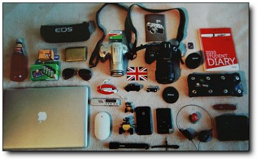
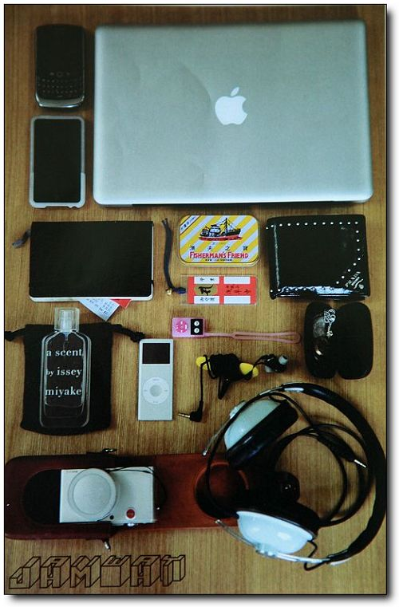
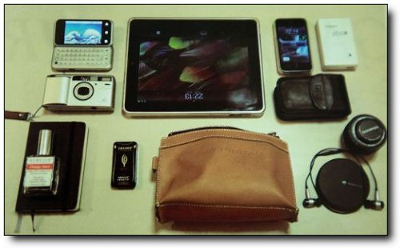
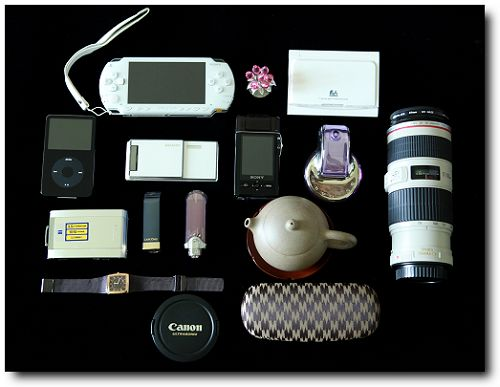

某杂志上介绍随身（常用）个人电子产品的栏目，很有趣。我也是电子产品爱好者，早几年按期订阅数码电子杂志。不过电子产品更新换代太快，这边还没用出感情，那边已经上新了，总有跟不上的疲惫感。随着年龄增长，恍悟“物尽其用”才好。
22岁澳大利亚学生嘉弓，他常用的电子产品与他的专业与爱好相关，比如摄影、模型、画画、读书、音乐。和照片上这些东西在一起，是他生活很大的一个组成部分。这些东西不再是简单的电子产品上的意义，更是他的生活和实现自我创意的必备。

新加坡学生21岁学生JAMWAY，是个注重细节的人，所以她更喜欢新加坡这个精致的国度。读书期间，电子邮件往来非常频繁，所以PUSH MAIL的BLACK BERRY成了她的首选，而8900是其中商务味道最淡的一款。莱卡D-LUX干净的外观是她最为心水的，全银色外观搭配纯皮套子。成像质量上，虽为卡片机，但有莱卡和松下做后盾也可无忧。iPod touch是JAMWAY用过的iPod系列中最喜欢的产品，操作感很强，还可以浏览网页。

25岁北京职员Raymond，据说已经精简很多东西了，毕竟上下班不方便，即使这样包包依然很重。iPhone和Moto一直装在随身的口袋里，因为iPhone和Android系统都喜欢，所以各备了一只。iPad，看书上网是他最常用的功能，如果其他产品待机能象iPad有10个小时的时间的话，这款产品也就失去了随身携带的意义。带两只相机是不得已，他喜欢胶片感，而有的场合却需要数码来完成任务。所以选了轻巧的理光R1s和奥巴的E-P1，据说E-P1画质比卡片机好很多，装饼干头的话，比卡片机好很多。

我拍了自己随身（常用）的电子产品。
***SONY的PSP，旅途中可用来看电影、看书、玩游戏、浏览存储照片，有上网功能，很方便，体积比iPad小很多啊，除了屏没有iPad大之外，其他都是优点。对iPad没有爱，携带不方便，苹果产品在中国使用也有它的不方便性。PSP右边是部6国语言电子翻译器，为旅行购置的；
***iPod，看视频听音乐，随身携带方便。SHARP手机每天使用，用它上网也方便。再往右是SONY的bloggie，随身携带可以拍照片拍视频，完全是为网络应运而生的产品，最神奇的是它需要外接的360度摄影头。BVLGARI香水，今夏最爱。CANON镜头盖和IS小小白代表5D MARK II出场，这是我经常使用的数码单反；
***SONY卡片机、LANCOME口红、SONY MP3播放器，那只紫砂壶为衬托品。丹麦产手表和瑞士买的MAXMARA眼镜。
这些电子产品中功能有些是重复的，因为会忍不住想体验一下新产品的乐趣，重复消费等于浪费。当然现在这种浪费越来越少，不会为了玩一玩去买，而是真的需要才会考虑是否入手。下面我最想入手的是饼干头相机，具体哪个牌号的还未最终决定。
